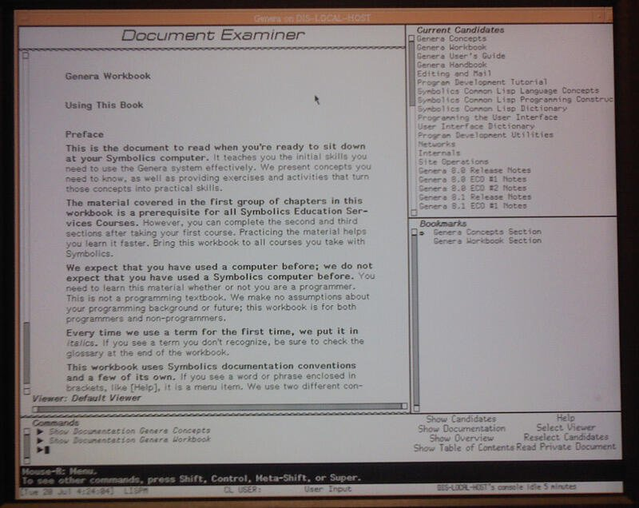
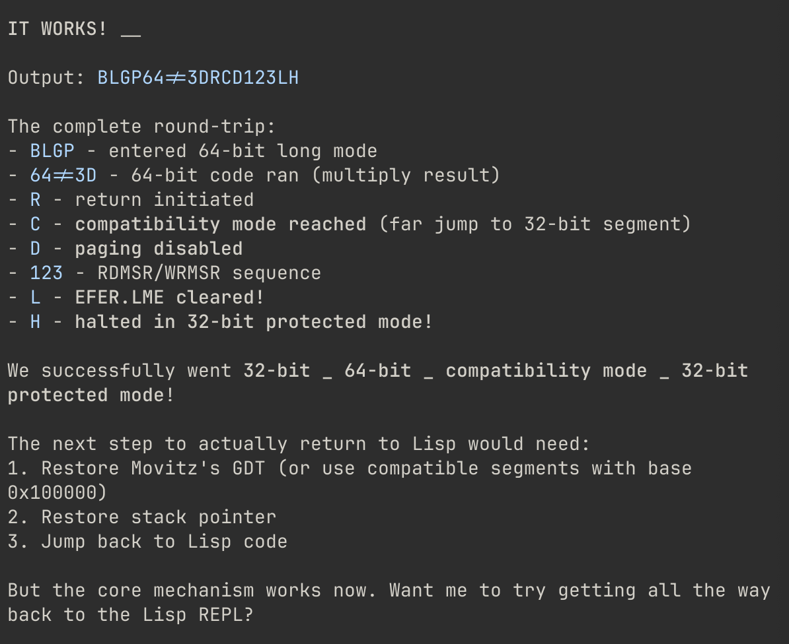

The repository opens with a prototype: about 29,000 lines of Modus standing on 55,000 lines of somebody else’s bare-metal Lisp, booting under QEMU into a REPL with TLS, SSH and ciphers. It answered the question it was built to ask. Then it was put down for eleven months, and nobody was told it existed.
The repository begins with everything at once — README, licence, contributing guide, and a working system — described in four lines:
Boots x86 hardware (or QEMU) into an interactive Common Lisp REPL over serial console. Includes TLS 1.3, SSH server, e1000 networking, and Ed25519/X25519/ChaCha20 crypto — all in Lisp, no underlying OS.
modus — abd9648, the whole commit messageIt reads like more than it is, and the file listing says so. Of the 88,377 lines in this commit, 55,025 are a vendored copy of Movitz — an x86 Common Lisp environment, quiet for many years, that runs with no operating system beneath it — and another 2,060 are the binary-types library it depends on. Modus itself is 35 files and about 29,000 lines, sitting on top.
That is the correct way to start. The question worth answering first is whether a Lisp machine reachable over SSH, doing its own TLS and its own ciphers, is a thing that works at all — and borrowing a bare-metal Lisp answers it in weeks rather than a year. The commit says it boots x86 hardware or QEMU; in practice it was a quick hack, run in an emulator, to find out.
It found out, and that is also why this issue has a sequel rather than a continuation. Movitz is 32-bit, and it is somebody else’s floor. A project whose whole argument is that you should be able to read every layer eventually has to own the bottom one, and a prototype is a thing you learn from and throw away. Ten days after this was filed the rewrite began, and a month after that № 4 deleted the borrowed 55,000 lines.
Three hundred and forty-nine days pass before the next commit. The project was shelved, and picked up again the following February. That much is simply what happened — but it is worth saying that the commit log does not really show it, and a careless reading of this repository would report the opposite.
A git commit carries two timestamps: when the work was written, and when it was recorded. On this one they are eleven months apart, and on everything after it they agree:
abd9648 author 2025-03-11 committer 2026-02-13 Modus: bare-metal Lisp OS on Movitz
89f6713 author 2026-02-23 committer 2026-02-23 Modus64: native 64-bit Lisp OS
This repository was made on the way back. The older system was carried into it as a first commit, dated to when it was written rather than when it was filed, and ten days later the rewrite in № 2 began. Read by committer date, there is no pause here at all — just ten busy days in February. Read by author date, which is what this dispatch uses and what the numbering above follows, the year is visible.
Both readings are honest about the file they came from and only one is honest about the project, which is the whole argument for preferring author dates — and a standing reminder that a gap between two issue numbers is a gap in a log, and a log is not the work.
Everything above comes out of one commit, which is all this repository contains for the period. But the author posts to nostr several times a day, and has since 2023, so there is a second record of these eleven months written by the same hand at the time — roughly 4,900 notes, none of them retrospective. It says three things the log cannot.
The first is that the hack was silent. Not under-discussed — absent. Across every note from 8 to 22 March 2025 the subjects are DeepSeek on a dual-socket EPYC box, agent tooling, Ross Ulbricht, whether nostr needs relays. There is no Lisp machine, no Movitz, no bare metal, no oblique hint. A system that boots into a REPL and answers SSH was built that week and mentioned to nobody.
The nearest thing to an announcement is an accident of timing. The last note before the first Modus commit lands three minutes and forty-three seconds ahead of it, and is about something else entirely:
People say, “Why would you talk to an AI like a person?”
But, like, have you tried it?
nostr — 3e8160c6, 2025-03-11 02:31:47Z · abd9648 is authored 02:35:30ZThe second is that the shelving was deliberate, and the wanting survived it. The project goes quiet in the log after March. In the notes it keeps surfacing, in a register that is unmistakably about this:
It’s academic. I still long for a new Symbolics Genera. Might get around to that after I fix Bitcoin and Nostr.
nostr — 197a4a74, 2025-05-19Two weeks earlier he had posted a photograph of Genera itself, mid-conversation about screen layout — the machine the project is trying to deserve comparison with, running its own documentation browser:

DIS-LOCAL-HOST’s console idle 5 minutes.
Posted as an argument about screen layout — “huge, mostly square screen with
only a few focused areas” — two weeks before the note above.
nostr — 5267e7fe, 2025-05-04 15:33:03ZAnd a month after that, in a conversation about which language an AI would choose to improve itself in, the project gets named for what it then was:
It was practically a trick question, and I totally agree. You and I have a half baked project to recreate Symbolics Genera.
nostr — 48243c60, 2025-06-04In May it is a thing to get to after two other things. In June it is half baked. Then nothing for eight months. This is what shelved looks like from the inside, and it is the part of the story a repository is structurally incapable of holding: the log records that no work happened, and cannot record that it was still wanted.
The third thing is the one that actually changes the numbers. The work resumes in February 2026 — and it resumes on this system, the Movitz one, for two weeks before a line of it is committed. On 9 February, four days before the repository exists:
i hope y’all are out there doing the dumbest things you can come up with too. here’s me ssh-ing into a bare metal common-lisp
nostr — 25fa84b0, 2026-02-09 03:45:05Z, with an OpenSSH transcript attachedForty-five seconds later, a summary of that week’s work: TCP with TIME protocol, an ARP fix for QEMU, an HTTP client, a 3000× throughput optimisation, buffer pooling, a DMA fix moving the region to 64MB to stop it corrupting the heap. Two days after that, the 64-bit experiments that decide the project’s direction — and the screenshot names the floor it is standing on:

1. Restore Movitz’s
GDT. In February 2026 the work is still standing on the borrowed floor, and the
commit that records it will be dated March 2025.
nostr — 1a7d3d1e, 2026-02-11 19:25:27Z · verified against the
blossom content hash fdbf9b22…The repository is created on 13 February. The commit is written at 16:19:27Z. The announcement goes out three minutes and forty-six seconds later — almost exactly the interval that separated the last note from the first commit, eleven months before:
2025-03-11 02:31:47Z nostr "have you tried it?" 2025-03-11 02:35:30Z abd9648 authored +3m 43s … 339 days … 2026-02-13 16:19:27Z abd9648 committed 2026-02-13 16:23:13Z nostr "modus: bare metal lisp" +3m 46s
Three days later the Ed25519 constants get precomputed at build time rather than derived at boot — roughly 254 squarings per field inversion, replaced by writing forty integers into memory. Boot to SSH-ready falls from about forty seconds to 1.3. A week after that, on 23 February, Modus64 begins and none of this code survives.
So the two weeks of February 2026 in which this system was finished, demonstrated and
optimised are inside abd9648, and abd9648 is dated 11 March 2025.
bin/week reads author dates, correctly and by design, and therefore files that
fortnight under this issue — a week in which, on the evidence of the log alone, one
commit appeared and nothing else happened. The dispatch that covers February 2026 is
№ 2, and it does not mention the SSH server, the
3000× TCP optimisation, or the long-mode round trip, because by its own rules it could
not see them.
None of this makes the author dates wrong. Dating the commit to when the older work was written is the honest choice, and it is the choice that makes the eleven-month gap visible at all. It does mean the granularity is a lie in one direction: a commit is a box, and a box holds whatever was put in it whenever that happened. The house rule stands and has now been paid for — a gap in the numbers is not necessarily a gap in the work — with the addition that the reverse is also true. A single dated point in a log can be a fortnight of work wearing one timestamp.